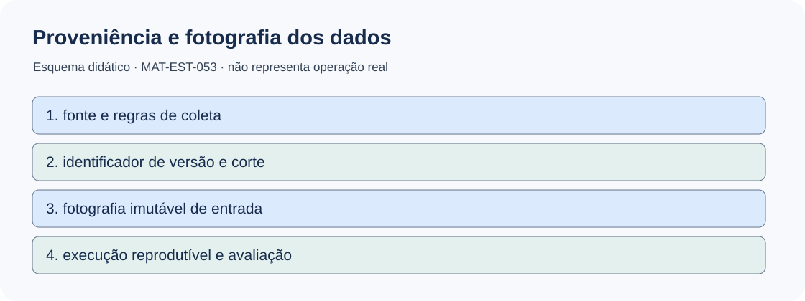
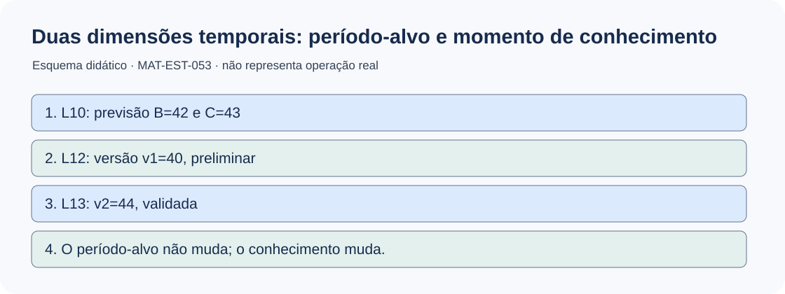
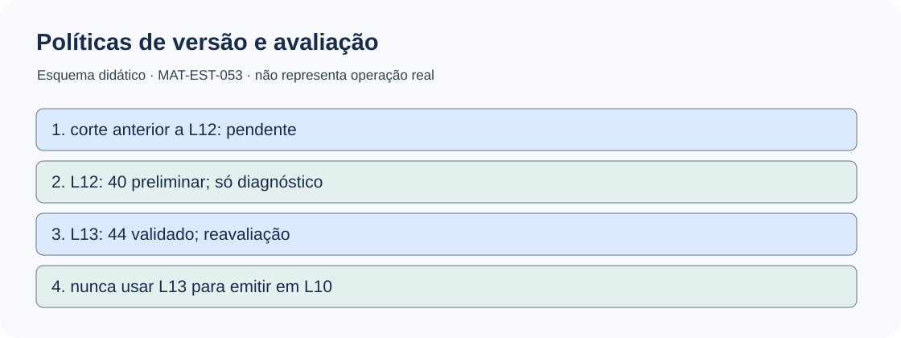
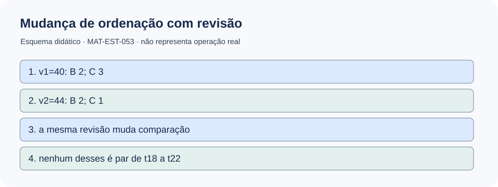
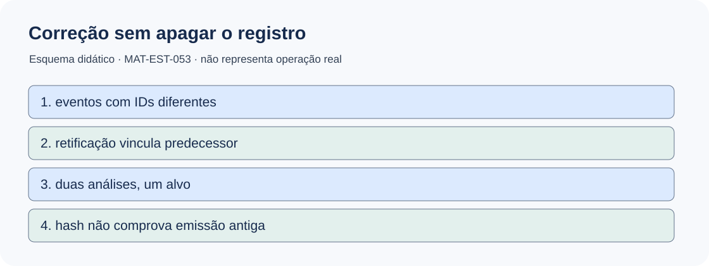
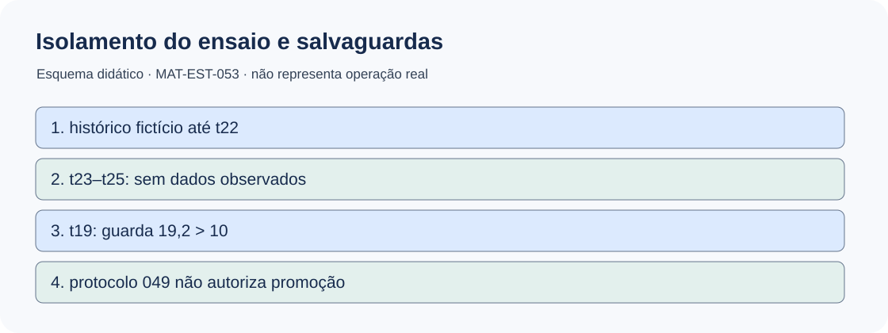

MAT-EST-053 — Qualidade e versionamento de dados temporais: proveniência, reprocessamento e políticas de avaliação por versão
**Área:** Matemática. **Unidade:** Estatística, séries temporais e ponte universitária. **Anterior:** MAT-EST-052. **Próximo (proposto):** MAT-EST-054. **Origem:** aula, exemplos e questões autorais; questões oficiais: zero. **Condição editorial:** pacote local de formação; não publicado, não sincronizado e não estudado. **Progresso individual:** não iniciado, sem alteração.
**Percurso sugerido:** A — proveniência, versões e conhecimento disponível (25 a 50 minutos); B — avaliações reproduzíveis, contas e retificações (25 a 50 minutos); C — casos, argumentação e exercícios graduais (25 a 50 minutos). O tempo não substitui demonstração de compreensão.
1. Objetivos e pré-requisitos
Ao estudar efetivamente a aula, você deverá ser capaz de: diferenciar o período ao qual um dado se refere do momento em que se tornou conhecido; identificar fonte, versão, estado de qualidade e fotografia de dados; construir duas leituras de um mesmo alvo sem apagar o registro anterior; executar a conta de erro e custo com versões distintas; justificar regras de elegibilidade e reprocessamento; reconhecer vazamento de informação, duplicidade e risco de selecionar versões depois do resultado; e escrever um parecer que descreva limitações da avaliação.
**Pré-requisitos:** operações com inteiros e médias, comparação de módulos, porcentagens, conceito de previsão por origem e horizonte, MAT-EST-047–052. Se houver dificuldade para operar sinais, retomar: observado menos previsto; positivo significa previsão abaixo do observado, negativo, previsão acima. Se a dificuldade for lógica, desenhar primeiro a ordem dos eventos.
**Relação com exames:** ENEM, FUVEST, UNICAMP e UNESP podem mobilizar leitura de tabelas, interpretação de fontes e raciocínio argumentativo; a engenharia de vintages, trilhas de auditoria e o protocolo específico pertencem ao aprofundamento universitário deste projeto, sem atribuição de cobrança oficial por banca.
2. Problema intuitivo: o número de ontem mudou hoje
Imagine consultar uma série em um boletim. A primeira divulgação registra 40 unidades. Uma conferência posterior identifica um erro de entrada e divulga 44 unidades. Qual número é o correto para uma análise de uma decisão tomada antes da correção? Qual deve ser usado para avaliar a previsão depois da correção? Não são necessariamente a mesma pergunta.
Um dado tem pelo menos duas histórias: **a que ele descreve** (período-alvo, ou tempo de referência) e **quando alguém poderia conhecê-lo** (ordem/data de disponibilidade e suas revisões). A coleção de valores efetivamente disponíveis em determinado corte recebe o nome de *vintage*, que podemos ler como fotografia de uma versão histórica da base. Manter a fotografia é essencial para não julgar uma decisão passada como se já existissem informações que só surgiram depois. A literatura de séries em tempo real trabalha explicitamente com essa distinção. [Croushore e Stark, conjunto de dados em tempo real](https://www.sciencedirect.com/science/article/pii/S0304407601000720).
**Não confundir:** dizer que a versão atual foi validada não demonstra que ela é verdade definitiva e imutável. Outra correção pode surgir. Portanto, registre qual versão, regra e corte de disponibilidade sustentam cada resultado.
3. O que significa proveniência de um dado
**Proveniência** é a trilha de origem e transformação: qual fonte publicou, qual arquivo ou registro foi recebido, qual período e unidade se pretendia medir, quando ficou disponível, se tinha situação provisória ou validada, qual regra transformou o valor, qual versão substituiu outra e de qual fotografia o cálculo dependeu.
Um registro robusto identifica: `observation_id`, `target_period`, `value_or_null`, `unit`, `source_id`, `source_version`, `available_at_or_logical_order`, `quality_status`, `corrects_observation_id`, `raw_digest`, `snapshot_id` e `namespace`. Os campos são propostas didáticas de implementação, não uma norma universal. Para previsão, guardar também `model_version`, `protocol_id`, `origin`, `horizon`, `input_snapshot_id` e `issued_order_or_authenticated_time`.
**Qualidade não é apenas número plausível.** Pergunte: a medição é de fato da variável esperada? Unidade e escala permanecem as mesmas? A origem é identificável? Há duplicidade? Faltou um período? A fonte fez correção? O status de validação é conhecido? Uma lacuna deve permanecer nula ou ausente, não virar zero por conveniência. A conferência acontece antes de admitir um registro no denominador da métrica final.

**Figura 1 — Linhagem dos dados.** Texto alternativo: a informação viaja da fonte para versão e fotografia congelada, que sustentam uma execução reproduzível. **Observe:** uma mudança de dado cria um novo identificador; não reescreve a fotografia da previsão original. **Síntese por áudio:** registre origem, disponibilidade, versão e transformação para permitir reconstruir o que se sabia ao calcular uma previsão. **Autoria:** produção própria.
4. Duas dimensões do tempo e as fotografias disponíveis
No **EXEMPLO-V-ISOLADO**, inventado somente para esta aula, em L10 são fixadas previsões B igual a 42 e C igual a 43 para um único alvo fictício chamado `v-alvo`. Em L12 surge observação preliminar de 40. Em L13 é divulgada correção validada para 44, vinculada ao identificador da anterior. Em L14 ocorre o recálculo documentado. L10 a L14 são **marcos lógicos de uma simulação**, não registros de horas reais nem comprovação criptográfica de publicação externa.
O alvo, `v-alvo`, permaneceu o mesmo. O conhecimento sobre ele foi alterado. Na fotografia anterior a L12 não há valor observado. Na fotografia de L12 a versão preliminar registra 40; na fotografia de L13 a versão validada registra 44, preservando também 40 como versão histórica. Nunca usar L13 como dado de entrada para reconstruir, sem aviso, a previsão de L10.

**Figura 2 — O alvo não envelhece do mesmo modo que a informação.** Texto alternativo: previsão em L10, preliminar 40 em L12, correção validada 44 em L13. **Observe:** o mesmo alvo possui múltiplas versões conhecidas em momentos diferentes. **Síntese por áudio:** um dado pode se referir ao passado e ainda assim só ter sido conhecido depois. **Autoria:** produção própria.

**Figura 3 — Qual valor cabe em cada fotografia?** Texto alternativo: antes de L12 o valor está pendente; em L12 só 40 preliminar; a partir de L13 existe 44 validado. **Observe:** `as-of`, ou 'como conhecido no corte', é uma condição de disponibilidade, não sinônimo de última versão. **Síntese por áudio:** uma avaliação retrospectiva com 44 é legítima se rotulada como posterior, não como informação disponível em L10. **Autoria:** produção própria.
5. Quatro políticas que respondem a perguntas diferentes
A escolha de qual versão entra no relatório deve ser feita **antes de olhar qual favorece o modelo**. Se for alterada depois, o protocolo, a justificativa e a avaliação original devem continuar acessíveis.
| Política didática | Pergunta que responde | Versão em EXEMPLO-V | Cuidados |
|---|---|---|---|
| AS_KNOWN | O que era conhecido no corte? | antes de L12: ausente; L12: 40 preliminar; L13: 44 validado | Não confundir preliminar com escore final. |
| VALIDATED_AS_OF | O que já estava validado até este corte? | L12: nenhum; L13: 44 | Pendência não é erro zero. |
| LATEST_VALIDATED | Qual versão validada mais recente no corte declarado? | 44 no corte L13 | Só para análise retrospectiva rotulada; não serve para predizer em L10. |
| DUAL_REPORT | Como o resultado mudou após retificação? | 40 preliminar e 44 validado, cada qual com ID | Mesmo alvo conta apenas uma vez por política e corte. |
**Para ouvir:** a primeira política reconstrói disponibilidade; a segunda exige evidência já validada; a terceira escolhe a versão validada mais recente em um corte explícito; a quarta mostra lado a lado a análise preliminar e sua correção. Nenhuma delas transforma duas versões de um mesmo alvo em duas ocorrências independentes. Essas são definições pedagógicas deste pacote, e não uma alteração do protocolo histórico da MAT-EST-049.
6. Exemplo resolvido passo a passo: um resultado pode mudar de interpretação
Na simulação isolada, previsão B igual a 42; previsão C igual a 43. Os dois valores são fixados em L10. Usaremos a convenção:
\[e_{m,v}=y_v-\widehat y_m.\]
**Leitura para ouvir:** o erro do modelo eme na versão vê é o valor observado nessa versão menos sua previsão congelada. O sinal positivo representa subprevisão; o sinal negativo, superprevisão.
Para comparar magnitudes, tomamos o módulo, isto é, a distância não negativa entre observado e previsto. Para a regra ilustrativa de custo mantida desde o protocolo anterior:
\[C(e)=3\max(e,0)+\max(-e,0).\]
**Leitura:** o custo é três vezes a parte positiva do erro, mais a parte positiva do oposto do erro; cobra três pontos por unidade subprevista e um por unidade superprevista.
**Passo 1 — Em L12, versão preliminar 40.** B: 40 menos 42 resulta em menos dois; módulo dois; custo dois pontos. C: 40 menos 43 resulta em menos três; módulo três; custo três pontos. Nessa fotografia preliminar, B tem menor módulo e menor custo **neste único caso isolado**. Não é escore elegível como resultado validado final.
**Passo 2 — Em L13, versão validada 44.** B: 44 menos 42 igual a mais dois; módulo dois; custo seis pontos. C: 44 menos 43 igual a mais um; módulo um; custo três pontos. Agora C apresenta o menor módulo e custo neste caso. A revisão alterou a comparação, mas não alterou B igual a 42 nem C igual a 43.
| Versão do observado | B: erro / módulo / custo | C: erro / módulo / custo | Situação |
|---|---|---|---|
| 40, preliminar v1 | −2 / 2 / 2 | −3 / 3 / 3 | Diagnóstico provisório |
| 44, validado v2 | +2 / 2 / 6 | +1 / 1 / 3 | Reavaliação validada do mesmo alvo |
**Síntese por áudio:** a observação mudou de 40 para 44. O módulo do erro de B continuou igual a dois, mas seu custo passou de dois para seis porque o sinal se inverteu. Para C, o módulo passou de três para um e o custo ficou em três. A comparação entre modelos se inverteu no módulo; isso não prova desempenho superior em uma população. É um exemplo construído para compreender dependência da versão.

**Figura 4 — Revisar dados pode mudar a ordenação local.** Texto alternativo: com observado 40, os módulos são B dois e C três; com 44, B dois e C um. **Observe:** a mudança vem do observado, não das previsões. **Síntese por áudio:** é indispensável declarar a versão usada antes de comunicar qual previsão ficou mais perto naquele alvo. **Autoria:** produção própria.
7. Reprocessamento: corrigir o relatório sem reescrever o passado
Um **reprocessamento** recalcula uma transformação ou métrica a partir de dados e regras identificados. Ele deve registrar `evaluation_id`, política de vintage, corte de disponibilidade, versão do alvo, identificadores das previsões, código/algoritmo e sua versão, resultado, razão da retificação e vínculo com a avaliação anterior. No EXEMPLO-V, a avaliação preliminar `MAT-EST-053-V-EVAL-v1` usa a observação `MAT-EST-053-V-OBS-v1`; a análise validada `MAT-EST-053-V-EVAL-v2` usa `MAT-EST-053-V-OBS-v2` e referencia a anterior. O arquivo `dados/EXEMPLO-V-eventos.jsonl` demonstra esses vínculos. Ele é editorial e não prova carimbo de tempo real.
**Roteiro seguro:** (1) identificar o registro original e quem/qual fonte sinalizou a alteração; (2) preservar seu conteúdo e digest; (3) acrescentar a correção com nova versão, unidade, justificativa, qualidade e vínculo; (4) validar a regra de escolha do corte; (5) recalcular só relatórios afetados, com nova ID; (6) apresentar lado a lado os resultados e a causa; (7) atualizar o status da avaliação sem adulterar a original; (8) permitir auditoria e, quando cabível, reversão.
Uma função hipotética `snapshot(corte, politica)` deve selecionar **a última versão elegível conhecida até o corte**, de acordo com a política. Ela jamais pode selecionar um registro com disponibilidade posterior ao corte. A condição lógica é: disponibilidade da versão menor ou igual ao corte; depois aplicar status e desempate determinístico. Deve haver uma versão por alvo no conjunto final daquela política, ou o alvo fica pendente.
Um resumo em pseudocódigo legível:
```text
para cada alvo:
candidatas = versões com disponibilidade <= corte e fonte conferida
candidatas = aplicar política de qualidade e escolha declarada
se nenhuma candidata elegível: registrar pendente; não incluir no MAE
caso contrário: selecionar uma observação por alvo e manter o ID
avaliar cada par usando as previsões já congeladas
salvar novo evaluation_id, IDs de entrada, versão do código e cálculo
não sobrescrever a avaliação antiga
```

**Figura 5 — Acrescentar, não apagar.** Texto alternativo: previsões B e C permanecem congeladas; observação preliminar gera análise v1; correção vinculada gera análise v2. **Observe:** duas avaliações podem existir, mas o alvo conta uma vez em cada fotografia. **Síntese por áudio:** auditoria é conservar a história das mudanças. **Autoria:** produção própria.
8. Integridade, autenticação e limites de um hash
Um resumo criptográfico, como SHA-256, permite conferir se dois arquivos têm bytes iguais ou se uma sequência foi alterada em relação a uma referência confiável. Um hash isolado **não comprova** que um arquivo existia numa data passada, quem o produziu, se sua fonte estava correta ou se seu conteúdo era verdadeiro. Para demonstrar emissão temporal real, seria preciso um sistema adicional de autenticação, armazenamento apropriado e evidência externa confiável, conforme o contexto.
Nossa demonstração contém IDs e encadeamento anterior no EXEMPLO-Z da MAT-EST-052; o pacote atual preserva esse log byte a byte. O EXEMPLO-V usa ordem lógica declarada e não fornece certificado de emissão. A comparação de bytes herdados no manifesto SHA-256 é evidência de preservação **entre arquivos do projeto**, não prova de coleta em campo.
Outro cuidado: preservar um dado errado por razões de auditoria não significa utilizá-lo na análise operacional. A versão rejeitada pode permanecer acessível no histórico e ser excluída por uma política de qualidade justificada. Assim, **retenção** e **elegibilidade para cálculo** são decisões diferentes.
9. Conexão com a série principal: não contaminar o histórico
Permanece a série de **valores totalmente fictícios** t01 a t22, construída progressivamente nas aulas anteriores. A planilha dos cinco pares t18 a t22 conserva MAE da referência B igual a 17,60 e do desafiante C igual a 8,36. O protocolo `MAT-EST-049-PROT-v1` exige oito pares e impõe que nenhuma piora local supere dez unidades. Em t19, o erro absoluto de C foi 23,2, contra quatro de B: deterioração de 19,2 unidades, que viola a guarda. Portanto, **não promover** C sob esse protocolo, sem apagar nem revisar retrospectivamente a regra.
Os alvos t23 a t25 continuam **sem observações registradas e sem emissões autenticadas**. Os valores B23 igual a 183 e C23 igual a 199 são recálculos ilustrativos, não provas de emissão. Os cenários t23 iguais a 178, 191 e 209 não são medidas. Os dados do EXEMPLO-Z (previsão 29, preliminar 30, validado 32) e do EXEMPLO-V (B42, C43, preliminar40, validado44) pertencem a namespaces separados; não acrescentam nenhum par aos cinco da série principal.

**Figura 6 — Comparações independentes.** Texto alternativo: histórico principal até t22, alvos t23–t25 pendentes, ensaios Z e V isolados, salvaguarda t19 violada. **Observe:** o conteúdo novo ensina a auditar uma versão, mas não fornece evidência nova para autorizar o modelo. **Síntese por áudio:** nenhuma revisão didática melhora magicamente a base do protocolo original. **Autoria:** produção própria.
10. Um segundo exemplo resolvido: completude e duplicidade
Uma equipe fictícia planeja oito alvos e, até certo corte, possui cinco pares elegíveis. Dois dos cinco alvos receberam correções de observação, totalizando sete arquivos de observação. O denominador de completude continua cinco sobre oito, equivalente a 62,5 por cento. Para MAE, suponha que os erros absolutos escolhidos pela política congelada sejam 2, 3, 4, 1 e 5. A soma é 15 e a média é 15 dividido por cinco, igual a **3 unidades**. Não dividir por sete arquivos, porque revisões não representam novos alvos; tampouco dividir por oito, pois os três faltantes não são erro zero.
Se uma política diferente usar uma nova versão validada para o terceiro alvo e seu módulo cair de quatro para dois, a nova soma é 13 e MAE passa a 2,6. O relatório deve citar as duas versões, os cortes, a regra de elegibilidade e a mudança de 0,4 unidade. Não vale escolher retrospectivamente a política que produz o número mais atraente, tampouco dizer que houve melhoria da previsão, porque as previsões ficaram iguais e mudou a observação de referência.
11. Como registrar um parecer transparente
**Objeto:** identificar modelos, alvos, horizonte, protocolo e intervalo dos cortes. **Origem dos dados:** indicar fonte, unidade, snapshots, estados de qualidade, IDs e alterações. **Resultados por política:** oferecer métricas, denominadores, versões, diferenças e ressalvas. **Conclusão:** explicitar o que mudou por revisão do dado, o que decorreu da previsão e quais decisões o protocolo realmente autoriza. Não chamar número didático de informação operacional ou recomendação para uma instituição real.
12. Erros comuns e relações com outras matérias
Confundir período de referência e data de disponibilização causa vazamento. Reaproveitar um CSV 'atual' como se fosse a fotografia antiga perde a informação disponível naquela origem. Substituir `null` por zero inflaciona a avaliação com eventos imaginados. Somar v1 e v2 como se fossem dois alvos distorce tamanho de amostra. Não informar o corte da versão 'mais recente' impede reprodução. Misturar EXEMPLO-V com t18–t22 é quebra de namespace. Declarar que SHA-256 certifica horário ou veracidade é extrapolação. Alterar a guarda após ver a falha de t19 é mudar o julgamento retrospectivamente.
**Conexões:** redação técnica e língua portuguesa exigem sujeito, tempo e limites explícitos; história e geografia trabalham com versões de fontes e mudanças metodológicas; computação usa versionamento, imutabilidade e transformação reproduzível; método científico diferencia pré-registro, observação e retificação; matemática traduz as escolhas em conjuntos, filtros, médias e custos. O material é conceitual e não atribui procedimentos particulares a bancas de vestibular.
13. Vídeo complementar e fontes
**Vídeo:** [Forecasting: Principles & Practice — 5.10 Time series cross-validation](https://www.youtube.com/watch?v=OGpENuxjRWM). **Canal:** OTexts. **Idioma:** inglês. **Duração:** aproximadamente 16 minutos e 35 segundos segundo a ficha herdada, não cronometrada por reprodução completa nesta produção. **Momento recomendado:** depois da seção 4. **Motivo:** reforça que avaliações devem respeitar a informação disponível antes do alvo, requisito do controle de vintages. O vídeo foi encontrado em listagem pública do YouTube e consta na coleção do autor; a conferência manual integral, reprodução no Edge e legendas ainda são pré-publicação. A aula é autossuficiente, e a questão específica de revisão é explicada no texto.
**Referências didáticas externas:** Hyndman e Athanasopoulos, [*Forecasting: Principles and Practice*, seção 5.10](https://otexts.com/fpp3/tscv.html), sobre origem móvel e informação anterior; Croushore e Stark, [*A Real-Time Data Set for Macroeconomists*](https://www.sciencedirect.com/science/article/pii/S0304407601000720), sobre vintages e revisões; Croushore, [*Forecasting with Real-Time Macroeconomic Data*](https://www.sciencedirect.com/science/article/pii/S1574070605010177), contexto de revisões dos dados. A definição dos casos Z e V, números e políticas em JSON é **autoral** e não uma transcrição dessas fontes. Fontes internas: protocolos e dados herdados de MAT-EST-049 a MAT-EST-052, copiados sem alteração.
14. Atividades graduais, correção e revisão
Realize primeiro `exercicios.md`, com dez itens básicos, dez de consolidação, dez autorais contextualizados no estilo de vestibulares e seis de reteste independente. **Questões oficiais: zero.** Evite consultar `gabarito-comentado.md` antes de registrar as respostas. A correção separada descreve o raciocínio e os motivos prováveis de erro: conteúdo, interpretação, cálculo, distração, memória, estratégia e tempo.
**Checklist antes da correção:** consigo justificar por que 40 e 44 são versões do mesmo alvo? Sei calcular com sinais? Consigo explicar por que o modelo B não muda após revisão? Sou capaz de recuperar o corte L12 sem olhar L13? Distingo cinco pares de sete arquivos? A guarda de t19 continua valendo?
**Resumo pronunciável:** o período descrito pelo dado não é a data em que esse dado se tornou disponível. Versões de observação precisam de IDs, proveniência, qualidade e corte. Uma análise pode ser recalculada, mas a original e a previsão que a motivou devem permanecer. Um novo valor validado pode mudar erro, custo e comparação local; isso não cria novo alvo nem demonstra melhoria preditiva real. Os exemplos Z e V não acrescentam alvos à série principal, t23 a t25 permanecem pendentes, e o protocolo herdado impede a promoção pela falha t19.
**Revisão espaçada:** um dia **após a sessão de estudo e tentativa reais**, desenhar as duas dimensões temporais e refazer 40 versus 44; após sete dias, resolver sem consulta o EXEMPLO-V e o caso dos denominadores; após trinta dias, aplicar o reteste e escrever um parecer completo. Não contar esses intervalos a partir da data em que o material foi escrito. Consolidar somente com evidência de explicação própria, cálculo correto, aplicação nova e recuperação posterior.
**Próximo tópico editorial proposto, não iniciado:** MAT-EST-054 — Auditoria de avaliações temporais: reconciliação de versões, rastreamento de métricas e relatórios reproduzíveis.
**Limites de execução:** nenhum dado externo coletado, nenhuma observação adicionada para t23–t25, nenhuma promoção decidida, nenhuma sincronização com Drive ou GitHub, nenhum deploy e nenhum teste manual no Edge; progresso individual não atualizado.